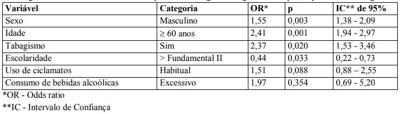
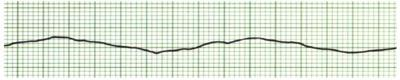
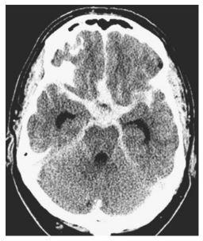

Questão 1 · Prevalência pontual · 4000012385Um pesquisador quer saber sobre a ocorrência de bacteremia durante episódios de colecistite aguda em um município. Para tanto, colherá, de 100 pacientes com colecistite aguda que derem entrada nos prontos- socorros, três amostras de sangue, com intervalo de uma hora entre elas, a contar da admissão, e as enviará ao laboratório para que sejam feitas as hemoculturas (em diversos meios). Os resultados definitivos estarão disponíveis em alguns dias. Que medida epidemiológica seria obtida desse estudo?
A Incidência de bacteremia em casos de colecistite aguda
B Coeficiente de correlação entre bacteremia e colecistite aguda
C Prevalência de bacteremia em casos de colecistite aguda
D Prevalência de colecistite aguda em casos de bacteremia
E Incidência de colecistite aguda em casos de bacteremia
Questão 2 · Medidas de Associação e Medidas de Impacto · 4000012383Foi realizado um estudo caso-controle para avaliar se há associação entre consumo elevado de carne e câncer de esôfago. Aponte a alternativa correta quanto à medida de associação para esse tipo de estudo (com Intervalo de Con ança – IC 95%) e à sua interpretação.
A Razão de prevalências = 3,52 (IC 95%: 1,01-4,55); aumento do risco de câncer.
B Risco relativo = 1,05 (IC 95%: 0,75-1,20); aumento do risco de câncer.
C Razão de incidências = 1,05 (IC 95%: 0,75-1,20); nenhuma associação.
D Razão de chances cruzadas = 1,05 (IC 95%: 0,75-1,20); nenhuma associação.
E Odds ratio = 3,52 (IC 95%: 1,01-4,55); aumento de chance de câncer.
Questão 3 · Ética Médica · 4000012381A pro ssão médica reúne uma série de grati cações psicológicas, dentre elas o sentir-se competente, receber reconhecimento e gratidão. No decorrer da formação e da vida pro ssional, entretanto, o médico se defronta com di culdades que podem não corresponder ao que é esperado como grati cação. O grau de idealização da pro ssão gera expectativas e, se não correspondidas, frustrações que repercutem na sua saúde. Esta afirmação:
A corresponde à realidade, pois mesmo com a crescente preocupação das escolas médicas com a formação do aluno, pesquisas têm mostrado que o médico apresenta prevalência alta de sintomas psiquiátricos, fadiga e ideação suicida.
B não se sustenta, uma vez que pesquisas têm mostrado que a percepção dos médicos em relação às mudanças na sua vida profissional melhora ao longo dos anos na maior parte dos itens avaliados.
C não se sustenta, uma vez que pesquisa realizada pelo Conselho Federal de Medicina mostra que os médicos referem ser acometidos pelas mesmas doenças que mais acometem a população geral.
D corresponde à realidade, tanto que nas escolas médicas, ao longo da formação, o aluno é preparado para enfrentar estas situações de frustração de tal forma que elas dificilmente o afetam.
E não se sustenta, porque a formação médica é focada no desenvolvimento técnico e científico que é socialmente reconhecido.
Questão 4 · Redes de Atenção à Saúde RAS · 4000012379Para promover a equidade e garantir a integralidade da assistência à saúde da população no Sistema Único de Saúde (SUS), torna-se necessário conformar a Rede de Atenção à Saúde, a qual deve ser organizada:
A descentralizadamente em cada município para facilitar o acesso da população aos serviços.
B de forma independente por cada ente federado devido às suas autonomias.
C regionalmente para que possa garantir maior eficácia e efetividade.
D como responsabilidade exclusiva do âmbito federal devido ao financiamento.
E como responsabilidade exclusiva do âmbito estadual para ampliar o acesso hospitalar.
Questão 5 · Program Saúde da Família PSF e Estratégia Saúde da Família ESF · 4000012375Política Nacional de Atenção Básica PNAB A Estratégia Saúde da Família (ESF) é tida como estratégia de quali cação e consolidação da Atenção Básica. Assinale a alternativa que contém a afirmação correta quanto ao Núcleo de Apoio à Saúde da Família (NASF).
A Os NASF foram criados com o objetivo de ampliar a abrangência e o escopo das ações da Atenção Básica, bem como sua resolubilidade. São constituídos por equipe multiprofissional que deve atuar de maneira integrada e apoiar os profissionais das equipes de Saúde da Família.
B Os NASF são compostos por equipes multiprofissionais com composição mínima de: médico (generalista ou especialista em Saúde da Família ou de Família e Comunidade), enfermeiro (generalista ou especialista em Saúde da Família), auxiliar ou técnico de enfermagem e agente comunitário de saúde.
C O agente comunitário de saúde é o ator principal do NASF e seu trabalho é apoiar o médico e o enfermeiro nas questões de saúde da comunidade.
D As equipes da ESF encaminham pacientes para os profissionais do NASF, que atendem mediante agenda disponibilizada pela regulação da UBS. Após a resolução do problema, o profissional realiza a contrarreferência para a equipe da ESF.
E O cirurgião dentista, o técnico em saúde bucal e o auxiliar de saúde bucal podem compor a equipe do NASF, apesar de não serem da equipe mínima.
Questão 6 · Estudos de CasoControle · 4000012373Doentes internados em hospitais tendem a ser mais expostos a determinados fatores de risco do que doentes não internados. Tendo em conta esse fato, qual alternativa contém as opções ordenadas que preenchem corretamente os espaços em branco na seguinte a rmativa: “Os estudos caso-controle de base hospitalar podem apresentar viés de seleção de _______________ e, por isso, _______________ a associação entre exposições e doenças”.
A casos - subestimar
B casos - fazer tender à nulidade
C controles - fazer tender à nulidade
D casos - superestimar
E controles - subestimar
Questão 7 · Sistema Único de Saúde SUS · 4000012372Os estudos que analisam comparativamente sistemas de saúde permitem afirmar que países:
A com sistemas universais obtêm melhores indicadores de saúde e de longevidade do que os observados em países com sistemas organizados a partir do mercado, mesmo que tenham condições econômicas e sociais semelhantes.
B que se estruturam a base de mercado dão prioridade às ações de promoção e prevenção à saúde por não dependerem da atuação do Estado e buscam a redução dos custos com assistência médica.
C que organizam seus sistemas a base de mercado favorecem a integralidade e a equidade pois, ao garantir assistência médica para as pessoas com melhores condições de vida, conseguem destinar recursos públicos aos mais necessitados.
D com sistemas universais e aqueles cuja organização se dá a base de mercado obtêm resultados similares em termos de indicadores de saúde, longevidade e custo-efetividade, enfrentando os mesmo dilemas quanto à sustentabilidade econômica.
E que possuem sistemas baseados em cobertura universal obtêm melhores indicadores de saúde e de longevidade do que os observados em países com sistemas universais.
Questão 8 · Transtorno Psicóticos · 4000012370Homem, 23 anos de idade, é trazido à Unidade de Pronto Atendimento por familiares preocupados com o seu comportamento. Paciente relata que passou a ser perseguido pela má a por ter descoberto segredos de uma religião antiga. Os pais relatam que ele tem falado desses conteúdos há dois meses, se afastado dos amigos e faltado às aulas na faculdade há oito meses. Refere grande tristeza, pois não entende o motivo da perseguição. Apresenta comportamento desorganizado, parece distanciado afetivamente, mesmo das pessoas mais próximas, e sai pouco de casa espontaneamente. Nega alucinações auditivas ou visuais e não tem histórico de uso de substâncias de abuso. Exame físico geral e neurológico: sem alterações. Qual é o diagnóstico mais provável?
A Transtorno delirante persistente
B Transtorno esquizofreniforme
C Episódio depressivo com sintomas psicóticos
D Transtorno esquizoafetivo
E Esquizofrenia
Questão 9 · Sistema Único de Saúde SUS · 4000012368Analise as afirmações abaixo sobre o Sistema Único de Saúde (SUS) e indique a alternativa correta.
A O SUS é um sistema público e gratuito, mantido indiretamente por meio de impostos e contribuições sociais arrecadados de toda a população.
B Pacientes que têm planos de saúde podem usar livremente as UBS, mas serviços de média e alta complexidade só podem ser utilizados mediante ressarcimento ao SUS.
C As ações de saúde indígena não são de responsabilidades do SUS, pois são realizadas pela FUNAI, vinculada ao Ministério da Justiça.
D Os gastos públicos com saúde corresponderam nos últimos anos a cerca de 9% do PIB, indicando que não há subfinanciamento e sim má gestão do SUS.
E A prestação de serviços de saúde no SUS é feita exclusivamente pelos serviços públicos e filantrópicos, sendo vedada a participação complementar da iniciativa privada.
Questão 10 · Projeto Terapêutico Singular · 4000012366O Projeto Terapêutico Singular (PTS) é uma ferramenta:
A para os casos em que a terapêutica inicial padronizada for ineficiente ou quando houver reincidência do processo de adoecimento e necessidade de acompanhamento por serviço de referência.
B da Estratégia de Saúde da Família, utilizada quando a equipe prepara um estudo de caso para matriciamento pelo Núcleo de Apoio de Saúde da Família (NASF).
C para o cuidado integral em saúde e pode ser empregado por serviços de diferentes níveis de atenção rotineiramente, com prioridade para sujeitos com complexas necessidades de saúde e de vida.
D gerencial da atenção básica, utilizada quando a auditoria de prontuários do serviço indica a necessidade de revisão de processos de trabalho da Unidade Básica de Saúde.
E empregada pela assistência farmacêutica para corrigir casos de paciente com polifarmácia ou efeitos colaterais de medicamentos.
Questão 11 · Política Nacional de Atenção Básica PNAB · 4000012364Criança, 5 anos de idade, com histórico de problemas respiratórios, era acompanhada na UBS próxima a sua casa. Com a mudança da família para outra região do mesmo município, não se vinculou à UBS de referência no novo território, que naquele momento contava com médico em apenas uma equipe de Saúde da Família. O agendamento de novas consultas estava demorando e durante alguns meses a criança não conseguiu ser atendida. A mãe passou a levá-la com frequência à Unidade de Pronto Atendimento (UPA) sempre que apresentava crises respiratórias. Estes atendimentos eram muito rápidos, focados na queixa do momento e a mãe se mostrava insegura e insatisfeita, porque as crises respiratórias foram cando mais frequentes e resistentes aos medicamentos. Analise o caso e assinale a alternativa correta.
A Adscrição de clientela e garantia da longitudinalidade do cuidado são funções da Atenção Básica contempladas nesse caso.
B O acolhimento e a coordenação do cuidado pela UBS poderiam ter sido realizados mesmo com a deficiência de médicos nas equipes da UBS.
C A responsabilização pelo cuidado e a busca ativa são funções da Atenção Básica contempladas neste caso.
D A opção da mãe de continuar utilizando a UPA justifica-se pela baixa complexidade e a falta de resolutividade em geral da Atenção Básica.
E A UBS tem competência técnica para realizar atividades de puericultura, mas não para cuidar de problemas respiratórios que cursam com agudização.
Questão 12 · Princípios e Diretrizes do SUS na Constituição Federal · 4000012362Com base nos preceitos que regulamentam a saúde na Constituição Federal de 1988, assinale a alternativa correta.
A Em caso de acidentes de trabalho, o acesso às ações de saúde para a recuperação é condicionado à contribuição para a seguridade social.
B Desempregados e imigrantes têm acesso somente aos serviços filantrópicos conveniados com o Sistema Único de Saúde.
C Todos os imigrantes domiciliados no Brasil têm direito à assistência à saúde por meio do Sistema Único de Saúde.
D A responsabilidade do Estado é circunscrita à atenção à saúde das populações carentes.
E Estrangeiros (turistas ou visitantes a trabalho) não podem ter assistência à saúde por meio do Sistema Único de Saúde.
Questão 13 · Estudos de Coorte · 4000012358Pesquisadores brasileiros identi caram a infecção pelo vírus Zika durante a gestação como um fator de risco importante para microcefalia em recém-nascidos. Eles deram seguimento ao estudo avaliando o prognóstico dos recém-nascidos com microcefalia segundo a gravidade do quadro clínico. Tal seguimento caracteriza um tipo de estudo epidemiológico que tem como características ser
A individual, observacional, prospectivo e analítico.
B individual, não experimental, retrospectivo e descritivo.
C individual, experimental, prospectivo e analítico.
D agregado, experimental, retrospectivo e descritivo.
E agregado, observacional, prospectivo e descritivo.
Questão 14 · Estudos de CasoControle · 4000012355Em um estudo do tipo caso-controle para avaliar a importância de seis variáveis na ocorrência de câncer de bexiga, os resultados foram analisados por meio de regressão logística múltipla, a qual revelou o seguinte: Com base nesses resultados, aponte a alternativa correta.

A Quatro variáveis estiveram associadas ao câncer de bexiga nesse estudo.
B O sexo masculino pode ter aparecido associado ao câncer porque homens podem fumar mais do que mulheres e o tabagismo é um reconhecido fator de risco para tal câncer.
C O consumo excessivo de bebidas alcoólicas quase dobrou o risco de ocorrência do câncer de bexiga.
D O uso habitual de ciclamatos aumentou em 51% o risco de câncer de bexiga.
E Se houvesse mais variáveis nesse estudo, provavelmente os intervalos de confiança das OR seriam mais precisos.
Questão 15 · Características do Bioagente · Mecanismos de emergência de doenças virais · 4000012351Aspectos Epidemiológicos das Doenças Transmissíveis Há diferentes possibilidades de se interromper a cadeia de transmissão de uma doença transmissível, podendo-se agir sobre: (1) a fonte de infecção, (2) a via de transmissão ou (3) o novo hospedeiro. Considerando essa ordenação (1 – 2 – 3), aponte a alternativa em que as doenças estão corretamente relacionadas à sua mais importante possibilidade de controle:
A Rubéola – Cólera – Febre amarela
B Leishmaniose visceral – Tétano acidental – Poliomielite
C Leptospirose – Febre amarela – Cólera
D Dengue – Rubéola – Tuberculose
E Tuberculose – Dengue – Tétano acidental
Questão 16 · Saúde do Idoso geriatria · 4000012349Qual das alternativas, considerando-se a ordem das locuções listadas, preenche corretamente o conceito de Reação Adversa a Medicamentos (RAM)? “A RAM é uma resposta _ _ _ _ _ _ _ ao uso de medicamentos e que ocorre _ _ _ _ _ _ _ seres humanos para _ _ _ _ _ _ _ de doenças”.
A nociva e não intencional / em doses normalmente utilizadas em / a profilaxia, diagnóstico ou tratamento
B nociva e não intencional / em doses potencialmente intoxicantes para / o diagnóstico ou tratamento
C exacerbada, mas não inesperada / em doses normalmente utilizadas em / a profilaxia, diagnóstico ou tratamento
D nociva e não intencional / em doses normalmente utilizadas em / a profilaxia ou tratamento
E exacerbada, mas não inesperada / em doses potencialmente intoxicantes para / o diagnóstico ou tratamento
Questão 17 · Variância · 4000012347Considere três grupos de pacientes. No grupo A existem 9 pacientes hipertensos e um não hipertenso; o grupo B contém 5 hipertensos e 5 não hipertensos e no grupo C existem 7 hipertensos e 3 não hipertensos. O que podemos a rmar sobre a variabilidade da hipertensão nos três grupos?
A O grupo A varia mais do que o grupo B.
B O grupo B varia menos do que o grupo C.
C O grupo B varia mais do que os grupos A e C.
D O grupo A varia mais do que os grupos B e C.
E Os três grupos apresentam a mesma variabilidade.
Questão 18 · Risco Relativo RR Razão de Riscos · 4000012345Dados hipotéticos de um estudo avaliando fatores de risco para ocorrência de infarto agudo do miocárdio encontraram um Risco Relativo igual a 0,40 ao se compararem expostos a não expostos. A exposição considerada foi realizar atividade física regularmente. O Intervalo de Con ança de 95% variou de 0,31 a 1,10. Com base nesses resultados, aponte a alternativa correta.
A Os expostos apresentaram proteção de 60%, com significância estatística.
B Houve uma redução de 40% no risco para os expostos, sem significância estatística.
C Houve uma redução de 60% no risco para os expostos, sem significância estatística.
D O risco de doença foi 40% maior entre os expostos (p<0,05).
E O risco de doença foi 60% maior entre os expostos (p>0,05).
Questão 19 · Teste do pezinho · 4000012343Menino, 15 dias de vida, é levado à consulta de rotina na Unidade Básica de Saúde. Você o atende e durante a anamnese pergunta à mãe sobre o resultado do “teste do pezinho”. Ela diz não entender o propósito desse exame e não saber o resultado. Como você a orienta?
A Trata-se de um conjunto de testes que identificam ou afastam risco de algumas doenças no recém-nascido, antes de sua manifestação clínica e que o resultado deve ser obtido o mais rápido possível e trazido à consulta.
B Trata-se de um conjunto de testes para diagnóstico de doenças raras, mas tratáveis e que cujos resultados são rotineiramente encaminhados à residência quando finalizados.
C A triagem neonatal biológica, obrigatória por lei em todo o território nacional, é formada por um conjunto de testes para a triagem de 3 doenças, cujo diagnóstico precoce tem como importância o aconselhamento genético para o casal.
D A triagem neonatal é uma opção da família e dos médicos da maternidade para diagnosticar doenças de risco para aquela família; quando o tratamento é instituído precocemente pode prevenir sequelas graves.
E A triagem neonatal serve para fazer diagnóstico de doenças genéticas de caráter hereditário que podem ou não ter tratamento, obrigatórias por lei para toda criança nascida em território nacional, mas que as famílias têm a opção de escolher as doenças a serem triadas.
Questão 20 · Constipação · 4000012341Menino, 8 anos de idade, há dois anos apresenta evacuação a cada 4 a 5 dias, com esforço, dor e fezes que entopem o vaso. Prende as pernas quando tem vontade de evacuar. Há um ano tem perda diária de fezes amolecidas em pequena quantidade, que borram a veste íntima, uma a duas vezes ao dia. Nos últimos meses está muito agressivo e não quer ir para escola devido a bullying. Exame físico: bom estado geral, muito retraído e envergonhado durante toda a consulta, P50 nas curvas de peso e estatura. Abdome: sem distensão abdominal, palpação com massa em hipogástrio, toque retal com esfíncter normotônico e presença de fezes em grande quantidade na ampola retal que está muito ampla. Qual é a hipótese diagnóstica mais provável?
A Incontinência fecal orgânica secundária a lesão esfincteriana
B Encoprese
C Megacólon congênito
D Constipação funcional com incontinência fecal por retenção
E Displasia neuronal intestinal
Questão 21 · Quadro clínico · Tratamento · 4000012338Gestante de 35 semanas, 2G 1P (1 cesárea), apresenta sangramento vaginal de moderada intensidade há 30 minutos. Refere episódios prévios de sangramento com 29 e 31 semanas. Ao exame físico: regular estado geral, afebril, PA 90 x 60 mmHg, FC 110 bpm, altura uterina 32 cm, FCF 140 bpm, tônus uterino normal, ausência de contrações. Ao exame especular observa-se sangramento intenso pelo colo uterino e coágulos em fundo de saco. O diagnóstico e a conduta obstétrica são:
A rotura de seio marginal; reposição volêmica e repouso
B placenta prévia; reposição volêmica e cesárea
C placenta prévia; corticoterapia e repouso
D descolamento prematuro da placenta; amniotomia e cesárea
E hemorragia de segunda metade da gestação; indução de parto.
Questão 22 · Outras Medicações · Tratamento de Manutenção · Broncodilatadores Beta2agonista de curta duração · 4000012336Menino, 8 anos de idade, vai à consulta pediátrica numa UBS. Ele é asmático e recebe beclometasona inalatória 100 mcg/dia como medicação de controle há 3 meses. A mãe refere que nas últimas 4 semanas seu lho tem tossido à noite 1 vez por semana e tem necessitado de broncodilatador de resgate 2 a 3 vezes por semana por apresentar tosse e chiado no peito. Qual a conduta a se tomar para esta criança, de acordo com as orientações do GINA 2018?
A Dobrar a dose do corticoide inalatório para 200 mcg/dia, associar broncodilatador de resgate diário e corticoide sistêmico por 5 a 7 dias
B Ajustar a dose do corticoide inalatório para 400 mcg/dia associado ao broncodilatador de longa duração, iniciar antileucotrieno e xantinas
C Checar o uso correto dos dispositivos inalatórios, dobrar a dose do corticoide inalatório, associar o broncodilatador de longa duração e corticoide sistêmico diário
D Checar adesão ao tratamento, uso correto dos dispositivos inalatórios e presença de comorbidades antes de dobrar a dose de corticoide inalatório para 200 mcg/dia
E Aumentar a dose do corticoide inalatório para 400 mcg/dia associando corticoide sistêmico diário, checar o uso correto dos dispositivos inalatórios e higiene ambiental
Questão 23 · Consistência e composição · Idade de introdução e f requência · 4000012334Mãe comparece à consulta de rotina de puericultura com seu lho de 5 meses de idade. Ela irá retornar ao trabalho e quer introduzir alimentação complementar. Assinale a alternativa correta com relação ao consumo de suco de frutas.
A Deve ser a primeira escolha na introdução de alimentação complementar.
B Seu consumo deve ser priorizado em relação ao ganho nutricional por conter grande quantidade de vitaminas, fibras e frutose.
C Restringir o seu consumo diário colabora para reduzir a absorção de triglicérides e o aumento de produção de insulina.
D Há associação entre consumo de suco de fruta e aumento do gasto energético por incremento do ácido úrico.
E Existe associação entre o uso abusivo de suco de frutas e a obesidade, podendo acarretar doença não alcoólica do fígado.
Questão 24 · Celulite PréSeptal · 4000012332Criança, 3 anos de idade, evoluindo há dois dias com quadro de edema e hiperemia em pálpebra direita após picada de pernilongo. Nega anorexia. Nega alergia a medicações ou antecedentes patológicos prévios. Ao exame: bom estado geral, eupneica, ativa, corada, hidratada, presença de crosta com secreção purulenta em pálpebra superior direita, edema, hiperemia e aumento de calor em pálpebra superior direita, sem oclusão orbitária, com movimentação ocular normal. Qual seria a melhor opção terapêutica?
A Amoxicilina oral
B Penicilina benzatina intramuscular
C Ceftriaxona intramuscular
D Cefalexina oral
E Azitromicina oral
Questão 25 · Quadro clínico e diagnóstico · Condutas · 4000012329Criança, 8 anos de idade, chegou ao pronto-socorro com queixa de febre e dor no quadril direito há 2 dias. Exame físico: limitação da mobilidade da articulação do quadril direito. Exames laboratoriais: leucocitose com desvio a esquerda e aumento da velocidade de hemossedimentação. Qual é a hipótese clínica mais provável e os exames de imagem mais adequados?
A Pioartrite, cintilografia óssea e ressonância magnética.
B Artrite reumatoide juvenil, radiografia e tomografia computadorizada.
C Osteoma osteóide, radiografia e ressonância magnética.
D Artrite reumatóide juvenil, radiografia e ressonância magnética.
E Pioartrite, radiografia e ressonância magnética.
Questão 26 · Técnicas de amamentação · 4000012327Mãe traz seu primeiro lho em consulta na UBS com 7 dias de vida, em aleitamento materno exclusivo. Ela acha que a criança não está conseguindo sugar direito; toda vez que tenta, a “boca escorrega”. Há 2 dias tem notado as duas mamas inchadas e muito doloridas. Você faz a hipótese de ingurgitamento mamário. Além da orientação da técnica de amamentação, assinale a melhor conduta para esse caso.
A Analgésicos, mamadas frequentes e compressa de água quente
B Antibioticoterapia, mamadas de 3 em 3 horas e compressa de água quente
C Ordenha manual e oferta de leite materno em copinho até melhora da dor
D Ordenha manual da aréola, mamadas frequentes e crioterapia
E Ultrassonografia, analgésico, mamadas frequentes e galactagogo
Questão 27 · Glomerulonef rite pósestreptocócica · Síndrome nef rítica · As grandes síndromes glomerulares · 4000012324Menino, 5 anos de idade, apresentou quadro de faringoamigdalite bacteriana há cerca de 2 semanas, evoluindo há 1 dia com quadro de edema, hematúria macroscópica e redução de débito urinário. Após atendimento em pronto-socorro foi observada hematúria com dismor smo eritrocitário positivo e hipertensão arterial (PA = 140x70 mmHg). Em relação à condição apresentada pelo paciente assinale a alternativa correta:
A o intervalo de tempo entre a piodermite e o quadro renal é habitualmente menor do que nos quadros de amigdalite
B o manejo do quadro envolve restrição hídrica, corticoide e repouso relativo
C a normalização dos níveis de complemento ocorre habitualmente 6 a 8 semanas após o quadro
D a tríade característica clássica envolve hipertensão, proteinúria e hematúria
E A recuperação completa ocorre em cerca de 60% dos casos
Questão 28 · Tratamento · Sinais de alarme · Quadro clínico · 4000012322Mulher, 17 anos de idade, apresenta febre alta, cefaleia, dores articulares e prostração há dois dias. Mora na cidade de São Paulo e nega viagens recentes. Refere vacinação em dia. Seu pai, de 48 anos, apresentou quadro semelhante há uma semana. Exame físico: T= 38,5 ° C, FC = 108 bpm, exantema maculopapular difuso, enchimento capilar lento, dor intensa à palpação do abdome, sem visceromegalias. Indique o diagnóstico mais provável e a conduta.
A Sarampo; hidratação oral e analgésicos
B Sarampo; internar para observação
C Dengue; hidratação oral e observação
D Dengue com sinais de alerta; internar para hidratação endovenosa
E Chikungunya; internar para diagnóstico e observação
Questão 29 · Apresentação Clínica · 4000012319Menino, 4 meses de idade, previamente hígido, apresenta estridor inspiratório de início recente e que piora quando mama ou chora. A mãe nega febre, prostração, adinamia, vômitos, náuseas ou diarreia. Qual é o diagnóstico mais provável?
A Laringomalácia
B Paralisia de pregas vocais
C Estenose subglótica
D Laringocele
E Fenda laríngea
Questão 30 · Mastoidite · 4000012316Menino, 3 anos de idade, é trazido à Unidade Básica de Saúde com febre (38,5 ºC) e otalgia esquerda há 3 dias. Ao exame físico, membrana timpânica esquerda está abaulada e hiperemiada, sendo feito diagnóstico de otite média aguda e prescrita amoxicilina (50 mg/kg/dia). Após 72 horas, criança retorna mantendo febre baixa (37,8 ºC). Ao exame físico: região retroauricular esquerda abaulada, hiperemiada e dolorosa à percussão, além de deslocamento do pavilhão auricular para frente. Qual é a conduta adequada?
A Aumentar a dose da amoxicilina e reavaliar em 48 horas.
B Substituir o antibiótico por amoxicilina + clavulanato e reavaliar em 48 horas.
C Manter antibiótico na dose atual e encaminhar para ambulatório de otorrinolaringologia.
D Internar e iniciar antibiótico por via parenteral.
E Manter antibiótico na dose atual e prescrever anti-inflamatório não hormonal.
Questão 31 · Diagnóstico · Manif estações clínicas · 4000012314Menino, 2 anos de idade, previamente hígido, sem qualquer antecedente epidemiológico, é trazido ao pronto atendimento com febre, vômitos e cefaleia há 12 horas e aparecimento de manchas no corpo há três horas. Exame físico: regular estado geral, com períodos de agitação, hipotenso para idade, perfusão lenti cada, petéquias subconjuntivais e equimoses em membros inferiores. Ausência de sinais meníngeos. Qual é o diagnóstico mais provável?
A Meningococcemia
B Dengue hemorrágico
C Púrpura trombocitopênica idiopática
D Púrpura de Henoch-Schönlein
E Febre maculosa
Questão 32 · Fisiopatologia · 4000012312Você atende um recém-nascido com idade gestacional de 29 semanas e peso de 1100 gramas. Aos 2 dias de vida encontra-se em incubadora aquecida, sob ventilação mecânica, devido a quadro de insu ciência respiratória. A radiogra a simples de tórax mostra campos pulmonares com in ltrado reticulogranular difuso e uniforme, broncogramas aéreos e aumento do líquido pulmonar. Em relação à fisiopatologia dessa doença, assinale a alternativa correta.
A A capacidade residual funcional encontra-se aumentada.
B A relação ventilação-perfusão está aumentada.
C A permeabilidade alvéolo-capilar está diminuída.
D A tensão de superfície na interface ar-líquido no alvéolo está aumentada.
E A complacência pulmonar encontra-se aumentada.
Questão 33 · Conduta · 4000012309Você atende um recém-nascido de mãe com sí lis na gestação, que não foi tratada, e apresenta VDRL com título de 1/32 e TPHA (Treponema Pallidum Hemagglutinatio Test) positivo no momento do parto. A sorologia da criança ao nascimento mostra VDRL com título de 1/128 e TPHA positivo. Ela deverá ser tratada obrigatoriamente com penicilina cristalina caso apresente:
A pênfigo palmo-plantar
B impossibilidade da coleta de líquor
C anemia
D hepatoesplenomegalia
E osteocondrite
Questão 34 · Inf ecção por C dif f icile · 4000012307Para qual das seguintes doenças existem evidências mais fortes mostrando que o transplante de fezes constitui uma opção terapêutica?
A Diarreia recorrente por Escherichia coli enterohemorrágica
B Diarreia recorrente pelo Clostridium difficile
C Doença de Crohn não responsiva aos imunobiológicos
D Síndrome metabólica
E Linfangiectasia intestinal
Questão 35 · Diagnóstico · Complicações · 4000012305Criança, 2 anos de idade, é internada com diagnóstico de pneumonia. Após 72 horas de uso de penicilina cristalina endovenosa, a criança mantém febre e dispneia. Qual é o próximo passo para a condução do caso?
A Fazer broncoscopia
B Repetir radiografia de tórax
C Fazer tomografia de tórax
D Intensificar fisioterapia respiratória
E Trocar o antibiótico
Questão 36 · Imunodef iciências primárias · Pediatria · 4000012303Qual das alternativas abaixo representa um sinal de alerta relacionado às imunodeficiências primárias (IDP)?
A Duas otites no período de 1 ano
B Amigdalites de repetição
C Molusco contagioso
D Duas ou mais pneumonias no último ano
E Infecções urinárias de repetição
Questão 37 · Cutâneo Subcutâneo e Mucosa · Sistema Respiratório · Diagnóstico · 4000012301Lactente de nove meses de idade apresenta reação 30 minutos após ingestão de ovo cozido pela primeira vez na sua vida. Qual dos quadros abaixo é compatível com anafilaxia?
A Distensão abdominal e posterior sangramento nas fezes
B Vômitos e diarreia
C Edema de pálpebras e lábios
D Urticária e sibilos
E Rubor facial e prurido
Questão 38 · Tratamento Geral do Choque · 4000012299Menino, 3 anos de idade, chega ao pronto atendimento com quadro de febre há três dias, inapetência e dispneia. Exame físico: MEG, descorado e desidratado +/4+, FR = 40 ipm, T = 37,8 °C, FC = 140 bpm, SatO₂ = 84 % em ar ambiente, PA= 70x50 mmHg. MV presente e diminuído em base direita, com estertor crepitante no local. BRNF sem sopros. Fígado a 1 cm do RCD, baço não percutível. Extremidades sem edema, com gradiente térmico e enchimento capilar igual a 4 segundos. Levado à sala de emergência, qual seria a sequência de prioridades no atendimento deste paciente?
A Cateter nasal 1l/min, monitorização cardíaca, acesso vascular, antitérmico intravenoso e glicemia capilar
B Cateter nasal 1l/min, acesso vascular, expansão volêmica com 20 ml/Kg de cloreto de sódio 0,9% e radiografia de tórax
C Máscara facial não reinalante, monitorização cardíaca, acesso vascular, glicemia capilar e expansão volêmica com 20 ml/Kg de cloreto de sódio 0,9%
D Acesso vascular, expansão volêmica com 10 ml/Kg de cloreto de sódio 0,9%, máscara facial não reinalante e radiografia de tórax
E Acesso vascular, antitérmico intravenoso, expansão volêmica com 10 ml/Kg de cloreto de sódio 0,9%, máscara facial não reinalante e radiografia de tórax
Questão 39 · Conjuntivite Neonatal · 4000012295Recém-nascido de seis dias de vida é trazido ao pronto-socorro com quadro de edema palpebral, secreção mucopurulenta, quemose e pseudomembrana conjuntival no olho direito com início há um dia. Qual a causa mais provável dessa conjuntivite?
A Neisseria gonorrhoeae.
B Química.
C Adenovírus.
D Chlamydia tracomatis.
E Herpes vírus
Questão 40 · Tratamento · 4000012293Mulher, 36 anos de idade, nuligesta com desejo reprodutivo, apresenta sangramento uterino anormal há 3 meses. Foi realizada biópsia do endométrio que mostrou hiperplasia complexa com atipia. O tratamento mais adequado para esta paciente é:
A curetagem uterina
B tratamento contínuo com progestagênio
C tratamento cíclico com estrogênio
D indução da ovulação com GnRH
E histerectomia vaginal
Questão 41 · Estadiamento · Tratamento · 4000012290Mulher, 35 anos de idade, apresenta sinusorragia. Exame especular: lesão vegetante, friável e sangrante no colo do útero com 3,5 cm de diâmetro. Toque retal: paramétrios livres. Biópsia: carcinoma espinocelular do colo do útero G2. Assinale a alternativa que contém o estadiamento e tratamento corretos:
A Ib1; cirurgia de Wertheim-Meigs.
B Ib2; quimiorradioterapia.
C Ib2; cirurgia de Wertheim-Meigs.
D Ib3; quimiorradioterapia.
E Ib3; Wertheim-Meigs.
Questão 42 · Fatores de risco · 4000012287Mulher, 46 anos de idade, apresenta história de câncer de mama diagnosticado aos 35 anos de idade. Sua mãe apresentou câncer de ovário aos 40 anos de idade e faleceu cinco anos após o início do tratamento. A paciente tem duas tias maternas: uma faleceu por câncer de pâncreas aos 46 anos de idade, a outra tia não apresenta histórico de qualquer tipo de câncer. Este caso exemplifica uma síndrome que:
A pode ser causada por variantes patogênicas somáticas em genes responsáveis pelo reparo de DNA.
B parece segregar segundo um padrão de herança autossômico recessivo, de acordo com a história clínica.
C parece segregar segundo padrão de herança ligado ao X, pois afeta mais mulheres.
D não exige conduta de rastreamento para redução de morbimortalidade, por se tratar de síndrome de predisposição hereditária.
E pode ser causada por variantes patogênicas germinativas em genes supressores tumorais.
Questão 43 · Segundo periodo expulsivo · Indicações · Obstetrícia · 4000012285Parturiente de risco habitual, 26 anos de idade, 38 semanas completas de gestação, em trabalho de parto espontâneo e sem bloqueio neuraxial. A frequência cardíaca fetal antes, durante e após as contrações uterinas é de 136 batimentos por minuto. Paciente encontra-se em período expulsivo há 4 (quatro) horas, a apresentação é cefálica em OP e plano +3 de DeLee. O diagnóstico mais provável e a conduta mais adequada são, respectivamente:
A Período expulsivo prolongado; parto vaginal operatório.
B Período expulsivo adequado; continuação do período expulsivo.
C Período expulsivo prolongado; cesárea.
D Desproporção cefalopélvica absoluta; cesárea.
E Desproporção cefalopélvica absoluta; parto vaginal operatório.
Questão 44 · Assistência prénatal · Obstetrícia · Sangramento primeira metade · 4000012281Primigesta, 39 anos de idade, com gestação de 8 semanas procura Pronto Socorro por sangramento vaginal discreto há 3 horas. Ao exame: útero aumentado e amolecido, colo impérvio, discreto sangramento pelo orifício externo cervical. ßhCG urinário +. Não há possibilidade local de ultrassom. Qual a conduta adequada?
A Internação e reposição volêmica
B Prescrever 800 mcg de progesterona via vaginal
C Prescrever 400 mcg de misoprostol por via vaginal
D Prescrever prednisona via oral
E Encaminhar a paciente para pré-natal na UBS
Questão 45 · Assistência ao parto na gestação multipla · Determinação da corionicidade e amnionicidade · 4000012279Tipos de gestações múltiplas Qual é o melhor momento do parto na gravidez gemelar monoamniótica, monocoriônica diamniótica e dicoriônica, respectivamente?
A 32, 36 e 38 semanas
B 34, 37 e 37 semanas
C 34, 36 e 38 semanas
D 37, 38 e 39 semanas
E 37, 39 e 40 semanas
Questão 46 · Abaixo de 34 semanas · 4000012277Primigesta, 30 semanas de idade gestacional, procura a maternidade referindo perda de líquido claro, em grande quantidade, há 4 horas. Nega intercorrências pré-natais. Nega dores. Refere boa movimentação fetal. Exame obstétrico: altura uterina de 25 cm, foco de 148 bpm, dinâmica uterina ausente. Exame especular: saída de líquido claro pelo orifício externo do colo. A melhor conduta é:
A não realizar o toque vaginal, colher cultura para estreptococo do grupo B e iniciar corticoide e tocolítico.
B realizar o toque vaginal e se houver dilatação cervical superior a 4 cm, prescrever corticoide e tocolítico.
C não realizar o toque vaginal, colher cultura para estreptococo do grupo B e prescrever corticoide.
D realizar o toque vaginal e se não tiver dilatação, observação e prescrever corticoide.
E realizar o toque vaginal e dependendo do índice de Bishop, prescrever ocitocina ou misoprostol.
Questão 47 · Parto · Inibição da amamentação · 4000012275Secundigesta com parto normal anterior, 37 anos de idade, novo parceiro na gravidez atual. Recebeu resultado de sorologia positiva para HIV com 13 semanas de gestação. Indicada terapia antirretroviral. A paciente questiona quanto a melhor via de parto e aleitamento materno. Nesse caso, qual a orientação e conduta adequadas?
A A melhor opção na prevenção da transmissão vertical é a cesariana eletiva, independente da carga viral. O aleitamento materno está contraindicado
B Pelo antecedente obstétrico, o parto pode ser vaginal, mesmo que apresente carga viral maior que 1000 cópias, mediante uso de AZT intraparto. O aleitamento materno está contraindicado
C Caso apresente carga viral indetectável no final do pré-natal (35 semanas), o parto pode ser vaginal e o aleitamento materno não está liberado
D Caso a carga viral seja indetectável no final do pré-natal (35 semanas), o parto pode ser vaginal, mas a gravidez não pode passar de 39 semanas. O aleitamento materno fica a critério da mãe.
E Caso a carga viral seja indetectável no final do pré-natal (35 semanas), o parto pode ser vaginal, mas o aleitamento materno está contraindicado
Questão 48 · Sif ilis na gestação · Síf ilis · 4000012273Primigesta, com VDRL negativo no 1º trimestre, recebeu resultado de VDRL 1/64 na 29ª semana gestacional. Informa ter parceiro xo e ser alérgica à penicilina, razão pela qual recebeu eritromicina via oral por 14 dias, com aderência adequada. O parceiro foi tratado com Penicilina Benzatina. O resultado do VDRL de controle da gestante após 4 semanas foi 1/32. A ultrassonogra a obstétrica com 36 semanas evidenciou feto sem alterações, peso adequado para idade gestacional e quantidade de líquido amniótico normal. Assinale a alternativa correta:
A Tratamentos com outras drogas que não a penicilina são considerados adequados, e a queda do VDRL e a ultrassonografia normal são sinais que não houve transmissão vertical
B Tratamentos com outras drogas que não a penicilina são considerados inadequados na gravidez e o recém- nascido deve ser considerado como de risco para sífilis congênita
C Como a paciente e o parceiro referem aderência ao tratamento e houve queda dos títulos, o tratamento do recém-nascido vai depender dos exames neonatais
D No caso de gestantes alérgicas, deve-se oferecer tratamento com eritromicina e realizar seguimento sorológico e ultrassonográfico para documentar a eficácia do tratamento materno e fetal
E O tratamento de escolha na gravidez é a penicilina, mas outras medicações podem ser utilizadas no caso de alergia, com boa eficácia na prevenção da sífilis congênita
Questão 49 · Segundo periodo expulsivo · Obstetrícia · 4000012272Parturiente, 22 anos de idade, 40 semanas de gestação, encontra-se no período expulsivo do parto há 40 minutos. O feto encontra-se em OET, plano +2 de De Lee, batimento cardíaco fetal em 80 bpm há 2 minutos. Qual é a conduta mais adequada?
A Decúbito lateral esquerdo e cardiotocografia contínua
B Ultimação do parto com cesárea
C Ultimação do parto com vácuo extração
D Ultimação do parto com fórceps de Simpson-Braun
E Ultimação do parto com fórceps de Kielland
Questão 50 · Tocólise · 4000012271A respeito da tocólise, é correto afirmar que:
A terbutalina promove os melhores resultados com poucos efeitos colaterais.
B atosibana inibe a enzima liberadora de prostaglandina com mínimos efeitos colaterais.
C nifedipina bloqueia os canais de cálcio sendo o tocolítico de escolha em hipertensas.
D sulfato de magnésio e indometacina são os tocolíticos de menor custo e elevada eficiência.
E atosibana e nifedipina são os tocolíticos de preferência na atualidade.
Questão 51 · Associação com câncer de ovário · 4000011712Apesar de pouco frequente, a transformação maligna de endometrioma de ovário se manifesta com qual tipo histológico?
A Cistoadenocarcinoma mucinoso
B Cistoadenocarcinoma seroso
C Carcinoma de células claras
D Tumor de células da granulosa
E Tumor de Sertoli-Leydig
Questão 52 · Planejamento f amiliar · 4000011704Mulher, 18 anos de idade, virgem, refere namoro há 3 meses e iniciará a vida sexual em breve. Tem diagnóstico de enxaqueca com aura e útero septado. Exame físico sem alterações. Qual dos métodos contraceptivos abaixo pode ser indicado nessa consulta?
A Implante subcutâneo com etonogestrel
B DIU de cobre
C Preservativo feminino
D Pílula com etinilestradiol e ciproterona
E Anel vaginal com etinilestradiol e etonogestrel
Questão 53 · Incontinência urinária · 4000011698Mulher, 69 anos de idade, refere urgência em urinar no retorno ao seu domicílio e, às vezes, tem perda urinária concomitante, há 6 meses. Qual é o diagnóstico clínico e a conduta?
A Incontinência Urinária de Esforço, indicar cirurgia de Burch
B Infecçcão Urinária de repetição, prescrição de antibioticoprofilaxia por 6 meses
C Incontinência Urinária de Esforço, indicar fisioterapia do assoalho pélvico
D Síndrome da Bexiga Hiperativa, prescrição de antagonista de receptor B3 adrenérgico
E Síndrome da Bexiga Hiperativa, prescrição de anticolinérgico ou B3 adrenérgico
Questão 54 · Etiologia · Tratamento · 4000011690Mulher, 40 anos de idade, casada, negra, nuligesta, com desejo reprodutivo, apresenta queixa de sangramento menstrual aumentado há 2 anos. Refere ciclos regulares, uxo com duração de 10 dias com saída de coágulos, e dismenorreia. Sem comorbidades ou antecedentes cirúrgicos. Exame físico ginecológico: abdome e exame especular sem alterações, toque vaginal evidenciando útero móvel, de superfície bocelada, pouco aumentado de tamanho. Ultrassonogra a endovaginal: útero anteverso etido de 120cc, com ecotextura miometrial heterogênea e zona juncional espessada, nódulo intramural de 3,0 cm, eco endometrial de 5,0 mm e anexos sem alterações. Qual é a conduta mais adequada?
A Miomectomia laparoscópica e liberar para engravidar após cirurgia.
B Embolização de artérias uterinas e liberar para engravidar após procedimento.
C Antiinflamatório não hormonal e liberar para engravidar.
D Miomectomia histeroscópica e fertilização in vitro após cirurgia.
E Análogo de GnRH, miomectomia laparoscópica e fertilização in vitro.
Questão 55 · Avaliação PréOperatória · 4000011682Mulher, 40 anos de idade, internou para histerectomia eletiva na enfermaria de ginecologia onde é adotado o protocolo de aceleração de recuperação pós-operatória. Em relação aos cuidados perioperatórios, pode-se afirmar que:
A os protocolos de aceleração de recuperação pós-operatória são multimodais e contam com médicos, enfermeiros, fisioterapeutas e nutricionistas.
B a ingesta de 400 mL de líquidos claros sem resíduos é permitida até uma hora antes do procedimento cirúrgico em pacientes sem contraindicação.
C durante o jejum pré-operatório deve-se realizar a reposição rotineira e liberal de fluidos para evitar a desidratação e a hipoglicemia.
D a antibioticoprofilaxia deve ser realizada em todas as cirurgias ginecológicas uma hora antes do procedimento.
E a profilaxia de náuseas e vômitos pós-operatórios não precisa ser realizada nas cirurgias ginecológicas.
Questão 56 · Reserva ovariana · 4000011676O hormônio anti-mulleriano (AMH) é reconhecido como importante marcador da reserva ovariana. Qual das seguintes situações NÃO altera seu nível sérico?
A Número de folículos antrais
B Níveis de Vitamina D
C Uso prolongado contraceptivos orais
D Volume ovariano
E Fase do ciclo menstrual
Questão 57 · Lesões prolif erativas com atipia · 4000011669Mulher, 60 anos de idade, apresenta nódulo irregular de 8 mm na mama direita identi cado na mamogra a e na ultrassonografia. O resultado da biópsia revelou hiperplasia ductal atípica. Qual é a próxima conduta?
A Ressonância magnética
B Controle com mamografia e ultrassonografia em 6 meses
C Terapia com tamoxifeno
D Exérese da lesão identificada por fio metálico ou radioisótopo
E Terapia com anastrozol
Revisar: possível letra faltando em enunciado
Questão 58 · Osteomielite · 4000011663Homem, 62 anos de idade, apresenta febre, intensa lombalgia e mau estado geral no 13º pós-operatório de prostatectomia. Considerando-se os sinais de alerta, os exames de imagem mais indicados para a avaliação da coluna lombar são:
A tomografia computadorizada e cintilografia óssea
B radiografia convencional e ressonância magnética
C radiografia convencional e cintilografia óssea
D radiografia convencional e ultrassonografia
E ultrassonografia e tomografia computadorizada
Questão 59 · Tratamento · Diagnóstico Dif erencial · Investigação · 4000011637Mulher, 78 anos de idade, chega à Unidade de Pronto Atendimento bastante agitada, acompanhada pela família. Está assustada, com discurso confuso e não consegue explicar o motivo de seu medo. Durante a consulta, ca progressivamente menos colaborativa, recusando-se a conversar. A família nega doença psiquiátrica prévia e relata que a alteração de comportamento começou na noite anterior. A paciente passou a noite agitada e dormiu apenas às 05:00h da manhã. Acordou mais tranquila, porém menos ativa que o usual, preferindo car deitada, sem muito apetite. Não conseguiu realizar as atividades domésticas usuais. Ao entardecer, começou a car agitada novamente. Exame físico: regular estado geral, descorada ++/IV, desidratada +/IV, anictérica, acianótica. FC = 110 bpm, PA = 150X95 mm/Hg, T = 37,8ºC. Exame físico di cultado pela falta de colaboração da paciente, com dor difusa à palpação do abdome. Apresenta odor forte na roupa. Qual é a hipótese diagnóstica e conduta inicial?
A Demência. Sedação com haloperidol 2 mg VO e deixar a paciente em observação em ambiente tranquilo. Aplicar o Mini Exame do Estado Mental assim que possível. Investigar acidente vascular cerebral com tomografia computadorizada de crânio.
B Esquizofrenia. Sedação com haloperidol 10 mg VO. Investigar história familiar da doença. Conversar com a família para autorizar internação em enfermaria psiquiátrica. Pedir hemograma e enzimas hepáticas.
C Delirium. Sedação com diazepam 10 mg VO e deixar a paciente em observação em ambiente tranquilo. Investigar causa base com hemograma, rastreamento metabólico e infeccioso, exames de imagem cerebral e urina I.
D Delirium. Sedação com haloperidol 2 mg VO e deixar a paciente em observação em ambiente tranquilo. Investigar causa base com hemograma, rastreamento metabólico e infeccioso, exames de imagem cerebral e urina I.
E Demência. Sedação com diazepam 10 mg VO e deixar a paciente em observação em ambiente tranquilo. Aplicar o Mini Exame do Estado Mental assim que possível. Investigar acidente vascular cerebral com tomografia computadorizada de crânio.
Questão 60 · Prevenção · Características gerais · 4000011630Homem, 23 anos de idade, apresenta lesões recidivantes no pênis há dois anos. Previamente ao surgimento das lesões, há prurido, sensação de queimação no local e as lesões evoluem para ulcerações. Exame físico: vesículas agrupadas sobre base eritematosa no corpo do pênis. Assinale a alternativa correta.
A Esta doença é causada por vírus da família Papillomaviridae.
B Há associação desta doença com câncer de pele.
C O tratamento deve ser iniciado preferencialmente no estágio de exulcerações.
D O tratamento supressivo deve ser considerado se houver mais de seis surtos por ano.
E Esta doença é causada por bactéria espiroqueta.
Questão 61 · Distúrbios metabólicos · 4000011614Homem, 54 anos de idade, sem comorbidades, foi admitido no pronto-socorro com queixa de febre, dor na perna esquerda associada à hiperemia local e linfadenite inguinal ipsilateral. Gasometria arterial: pH = 7,22; bicarbonato = 12mEq/L; PaCO₂ 34mmHg; PaO₂ = 87 mmHg. Exames laboratoriais: sódio = 140mEq/L; cloro = 101mEq/L. Qual é o distúrbio ácido- base evidenciado?
A Distúrbio ácido-básico misto, acidose respiratória e alcalose metabólica e sem alteração no anion gap.
B Distúrbio ácido-básico simples, acidose metabólica com ânion gap normal e resposta compensatória respiratória adequada.
C Distúrbio ácido-básico misto, alcalose respiratória e acidose metabólica com ânion gap normal.
D Distúrbio ácido-básico simples, acidose metabólica com ânion gap aumentado e resposta respiratória compensatória adequada.
E Distúrbio ácido-básico misto, acidose metabólica com ânion gap aumentado e resposta compensatória respiratória inadequada.
Questão 62 · Quadro clínico · Tratamento · 4000011603Homem, 19 anos de idade, apresenta tosse com expectoração amarela, sem sangue, há 3 dias, acompanhada de dor torácica posterior direita e febre de 38,5C. Nega falta de ar, doenças associadas, tabagismo, etilismo ou viagens recentes. Exame físico: FR 16 irpm, Sat O₂ 97% ar ambiente, FC 95 bpm, PA 120x80 mmHg; estertores crepitantes nos na base posterior do pulmão direito; restante sem alterações. Radiogra a de tórax: consolidação segmentar em lobo inferior direito. Quais são o diagnóstico e a conduta mais adequados?
A Pneumonia adquirida na comunidade; tratamento em enfermaria (CURB-65 = 0); ceftriaxone e claritromicina; controle clínico em 48-72 horas e clínico e radiológico no final do tratamento.
B Pneumonia adquirida na comunidade; tratamento ambulatorial (CURB-65 = 0); macrolídeo ou betalactâmico, (amoxicilina ou amoxicilina + clavulanato); controle clínico em 48-72 horas e clínico e radiológico no final do tratamento.
C Pneumonia adquirida na comunidade; tratamento ambulatorial (CURB-65 = 3); quinolona respiratória; controle clínico em 48-72 horas e clínico e radiológico no final do tratamento.
D Pneumonia adquirida na comunidade; tratamento em enfermaria (CURB-65 = 2); ceftriaxone e claritromicina; controle clínico e radiológico 48-72 horas e clínico e radiológico no final do tratamento.
E Pneumonia adquirida na comunidade; tratamento em UTI (CURB-65 = 4); ceftriaxone e quinolona respiratória; controle clínico e radiológico 24 horas e clínico e radiológico no final do tratamento.
Questão 63 · Cintilograf ia ventilaçãoperf usão · Angiotomograf ia de tórax · Ddímero · 4000011590Mulher, 35 anos de idade, chega ao pronto-socorro com queixa de dispneia de início súbito há um dia, dor torácica ventilatório-dependente e hemoptise de pequeno volume. Antecedentes pessoais: asmática, tabagista, em uso de contraceptivo oral e fratura de membro inferior direito há 30 dias com imobilização por duas semanas. Exame físico: FC = 110 bpm, FR = 22 ipm, PA = 120x80 mmHg, Sat O₂ = 92% em ar ambiente; ritmo cardíaco regular em dois tempos, sem sopros; pulmões com murmúrio vesicular e discretos sibilos presentes bilateralmente; membros inferiores sem edema. Quais são os exames para diagnóstico e estratificação de risco?
A Radiografia de tórax, eletrocardiograma, dosagem sérica de D-dímero
B Angiotomografia computadorizada de tórax, ecocardiograma e dosagem sérica de BNP
C Angiotomografia computadorizada de tórax, eletrocardiograma e dosagem sérica de D-dímero
D Radiografia de tórax, pico de fluxo expiratório e gasometria arterial
E Cintilografia pulmonar ventilação/perfusão, eletrocardiograma e dosagem sérica de troponina
Questão 64 · Inibidores do sistema reninaangiotensinaaldosterona · 4000011572Mulher, 66 anos de idade, diabética tipo II, procura o seu consultório com PA = 140x90 mmHg. Exames laboratoriais: taxa de filtração glomerular estimada em 38 ml/min por 1,73m² e proteinúria de 1,9g/24h. Qual é a conduta mais adequada?
A A pressão arterial está controlada não havendo necessidade de iniciar drogas antihipertensivas.
B Prescrição de diuréticos para evitar queda da filtração glomerular.
C Prescrição de inibidores da enzima conversora da angiotensina ou bloqueadores dos receptores da angiotensina II.
D Prescrição de bloqueador de canal de cálcio para diminuir proteinúria.
E Prescrição de inibidor da enzima de conversora da angiotensina deve ser evitado devido a função renal diminuída.
Questão 65 · Quadro clínico da leucemia linf oide crônica LLC · 4000011559Classif icação da leucemia linf oide crônica LLC morf ológica citogenética e biologia molecular Diagnóstico da leucemia linf oide crônica LLC Homem, 79 anos de idade, apresenta linfocitose nos exames de rotina solicitados em consulta com o seu geriatra. Exames laboratoriais: Hb =11,1 g/dL; VCM = 90 fL; Leucócitos = 35.500/mL (32.100/mL linfócitos) e Plaquetas 108.000/mL. Exame físico: linfonodomegalia cervical bilateral e esplenomegalia, com baço a 3 cm do rebordo costal esquerdo. Qual é a hipótese diagnóstica mais provável e a melhor conduta nesse momento?
A Leucemia linfocítica aguda e imunofenotipagem de sangue periférico.
B Leucemia linfocítica crônica e imunofenotipagem de medula óssea.
C Leucemia linfocítica crônica e imunofenotipagem de sangue periférico.
D Linfoma leucemizado e imunofenotipagem de medula óssea.
E Linfoma leucemizado e biópsia de linfonodo cervical e de medula óssea.
Questão 66 · Hemocromatose · 4000011551Em relação à hemocromatose, assinale a alternativa correta.
A Pesquisa de mutações no gene HFE é necessária para o diagnóstico definitivo de hemocromatose hereditária.
B Anemia hipocrômica microcítica é a manifestação observada na hemocromatose, embora nem sempre esteja presente no diagnóstico inicial.
C Embora a ressonância magnética possa identificar excesso de ferro tecidual, a biópsia hepática é imprescindível para o planejamento terapêutico.
D A ressonância magnética apresenta numerosas variáveis confundidoras para o diagnóstico e seus achados não são específicos para identificar excesso de ferro.
E Elevação de ferro sérico, elevação de saturação da transferrina e excesso de ferro parenquimatoso são considerados denominadores comuns na hemocromatose.
Questão 67 · Classif icação do mieloma múltiplo MM · Introdução ao mieloma múltiplo MM · 4000011542Quadro Clínico do mieloma múltiplo MM Homem, 61 anos de idade, apresenta em exame de rotina eletroforese de proteínas com componente monoclonal em fração de gamaglobulinas (4g/dL). Ele refere cansaço e nega outros sintomas. Quais exames você solicitaria para elucidação diagnóstica?
A Biópsia da medula óssea com citometria de fluxo do sangue periférico.
B Hemograma, creatinina, cálcio sérico, avaliação esquelética por raio X.
C Ressonância nuclear magnética da coluna vertebral com biópsia dirigida.
D Albumina e
E Eletroforese de hemoglobina com quantificação de cadeias leves.
Questão 68 · Síndrome antif osf olípide SAF · Manif estações clínicas não critério · 4000011531Mulher, 30 anos de idade, com síndrome do anticorpo antifosfolípide (G1 P1 A0, um óbito fetal com 32 semanas, trombose venosa profunda de membro inferior direito e anticoagulante lúpico positivo por duas vezes com intervalo de 12 semanas). Refere que nos últimos 6 meses tem apresentado episódios de pressão arterial elevada. Faz uso de varfarina há 5 anos sem controle regular do RNI. Ao exame físico apresenta PA=180x100 mmHg, sem outras alterações. Exames laboratoriais: creatinina=1,2 mg/dL (VR= 0,5 -1,3); Urina 1 = proteínas +/4+, leucócitos 8.000/campo, eritrócitos 65.000/campo; e proteinúria= 0,9g/24h. Assinale a alternativa correta:
A a biópsia renal é útil para o diagnóstico de nefropatia da síndrome antifosfolípide e a histologia mostra microangiopatia trombótica na fase crônica da doença
B o diagnóstico de lúpus eritematoso sistêmico com nefrite lúpica e síndrome antifosfolípide secundária se impõe, pois 20 a 40% dos pacientes com síndrome antifosfolípide desenvolvem lúpus sistêmico
C pacientes com síndrome antifosfolípide não evoluem com nefropatia secundária à doença
D a nefropatia da síndrome antifosfolípide pode se manifestar com hipertensão arterial e hematúria; na biópsia renal há hiperplasia fibrosa da íntima e focos de atrofia tubular com pseudotiroidização
E trata-se de nefropatia hipertensiva sem associação com a síndrome antifosfolípide; a biópsia renal é proscrita, pois a paciente usa anticoagulante oral
Questão 69 · Tratamento da AESPassistolia · Ventilação · Desf ibrilação · 4000011520Homem, 63 anos de idade, internado, foi encontrado inconsciente. Após verificação de pulso central foi observado no monitor cardíaco o ritmo abaixo. Além de chamar por ajuda e solicitar desfibrilador imediatamente, você deve:

A Iniciar compressões torácicas, com desfibrilação o mais precoce possível para retorno a circulação espontânea
B Iniciar compressões torácicas, realizar epinefrina na dose de 1 mg IV em bolus e identificar as causas da parada cardiorrespiratória
C Aplicar desfibrilação na carga máxima do aparelho e providenciar marca-passo transcutâneo
D Instalar marca-passo transcutâneo e providenciar marca-passo transvenoso, caso não haja retorno do ritmo
E Aplicar desfibrilação na carga máxima do aparelho e iniciar compressões torácicas após o choque
Questão 70 · Inibidores da Bomba de Prótons IBP · 4000011508Mulher, 30 anos de idade, apresenta história de dor epigástrica e queimação retroesternal, que piora após alimentação, e empachamento com determinados alimentos. Exame físico: sem alterações relevantes. Diante da principal suspeita diagnóstica, qual é o tratamento medicamentoso inicial mais adequado?
A Lansoprazol 30mg em duas tomadas diárias por 4 semanas
B Esomeprazol 40mg ao dia tomado durante a primeira refeição por 12 semanas
C Rabeprazol 10 mg ao dia tomado 2 horas antes da primeira refeição por 6 semanas
D Omeprazol 20mg ao dia tomado 30 minutos antes da primeira refeição por 8 semanas
E Pantoprazol 40mg em duas tomadas diárias junto com as refeições por 8 semanas
Questão 71 · Neurologia · Avaliação Funcional · Avaliação Cognitiva · 4000011503Mulher, 82 anos de idade, chega em consulta com a filha com queixa de esquecimento e sensação de mal- estar. Deixou de frequentar o clube dos idosos, prefere car em casa e perdeu o prazer nas atividades habituais. Nega tristeza e tem bom apetite. Refere uma certa irritação porque perde objetos. Não acorda descansada pela manhã. Aparenta estar distraída durante a consulta. Qual é o instrumento que melhor auxilia no diagnóstico deste caso?
A Mini Exame do Estado Mental (Mini Mental)
B Método de Avaliação CAM (Confusion Assessment Method)
C Atividades de Vida Diária (AVD) de Katz
D Escala de Depressão Geriátrica (GDS)
E Atividades Instrumentais de Vida Diária (AIVD) de Lawton
Questão 72 · Características Ultrassonográf icas dos Nódulos · 4000011491Mulher, 32 anos de idade apresenta US de tireoide com nódulo sólido no terço médio do lobo direito com diâmetro de 1,5 cm, hipoecogênico, bem delimitado, com macrocalci cações, uxo periférico e presença de halo periférico completo. Qual das características descritas acima indica maior risco de malignidade?
A Hipoecogenicidade.
B Diâmetro maior que 1 cm.
C Macrocalcificação.
D Fluxo periférico.
E Halo periférico completo.
Questão 73 · Crise Tireotóxica · Doença de Graves · 4000011482Homem, 28 anos de idade, chega ao pronto socorro com história de agitação, perda de peso (10 kg), diarreia e palpitações há um mês. Há 2 dias, houve piora dos sintomas, principalmente das palpitações, e passou a apresentar alucinações visuais. Ao exame físico, apresentava-se extremamente agitado, porém consciente. Pele quente e úmida. Temperatura axilar 38,9ºC. Pulso de 140 batimentos por minuto, arrítmico, PA = 160 x 60 mmHg. Tireoide aumentada cerca de 2 vezes seu tamanho normal e proptose ocular bilateral. Eletrocardiograma revelou brilação atrial. Exames laboratoriais mostraram: TSH <0,05 mUI/L (referência: 0,45-4,5) e T4 livre >7,7 ng/dL (referência: 0,6-1,5). Qual a hipótese diagnóstica mais provável e a conduta imediata?
A Crise adrenérgica por feocromocitoma associada à tireotoxicose por Doença de Graves. Tratar com drogas antitireoidianas e internar para betabloqueio e planejamento cirúrgico da neoplasia adrenal.
B Crise de pânico precipitada por hipertireoidismo por Doença de Graves e fibrilação atrial. Tratar com iodeto de potássio, anticoagulação e avaliação psiquiátrica.
C Surto psicótico precipitado por tempestade tireoidiana. Estabilizar o quadro de agitação com antipsicóticos, terapia antiagregante plaquetária com ácido acetilsalicílico e indicar tireoidectomia de urgência.
D Tempestade tireoidiana complicada com fibrilação atrial. Internar preferencialmente em unidade de cuidados intensivos; iniciar antitireoidianos, betabloqueadores, corticoide e, se disponível, iodeto de potássio 1-2 horas após a primeira dose de antitireoidianos.
E Tireoidite aguda levando a tireotoxicose e sepse. Tratar com antibioticoterapia de amplo espectro e, caso identificado abscesso cervical, indicar drenagem cirúrgica.
Questão 74 · Apresentação Clínica e Avaliação Inicial · 4000011474Mulher, 50 anos de idade, procura atendimento na Unidade Básica de Saúde queixando-se de nódulo na região anterior do pescoço há 4 meses, com crescimento progressivo no último mês. Nega anorexia, perda de peso, febre, disfagia ou disfonia. Tabagista 30 anos-maço. Ao exame físico, palpa-se nódulo na topogra a do lobo tireoidiano esquerdo com cerca de 2,0 cm de diâmetro, endurecido, móvel à deglutição. Nota-se ainda linfonodo cervical esquerdo com 3,0 cm de diâmetro, endurecido. Traz exames laboratoriais que mostram função tireoidiana normal. Assinale a alternativa correta.
A Biópsia excisional do nódulo para exame histológico é o método recomendado para o diagnóstico etiológico, sendo capaz de selecionar os pacientes com lesões malignas ou suspeitas.
B Exame de cintilografia da tireoide com iodo radioativo ou tecnécio para afastar nódulo hiperfuncionante é desnecessário neste caso, uma vez que a função tireoidiana é normal.
C A ausência de sintomas sistêmicos, tais como febre, anorexia e perda de peso, torna pouco provável a possibilidade de neoplasia maligna da tireoide.
D O risco de malignidade de nódulos tireoidianos aumenta significativamente na presença de história de tabagismo e idade acima de 45 anos.
E A presença de linfonodomegalia cervical maior que o nódulo tireoidiano sugere diagnóstico de linfoma.
Questão 75 · Fatores clínicos predisponentes · Cardioversão elétrica · 4000011466Mulher, 30 anos de idade, com estenose mitral sintomática procura o pronto socorro devido a brilação atrial de alta resposta ventricular. Você deve indicar a reversão imediata da arritmia porque a paciente pode desenvolver rapidamente:
A Bloqueio atrioventricular de alto grau.
B Infarto agudo do miocárdio.
C Choque cardiogênico.
D Edema agudo de pulmão.
E Arritmia ventricular complexa.
Questão 76 · Classif icação · Tratamento geral da crise hipertensiva · 4000011458Homem, 60 anos de idade, hipertenso em tratamento irregular, procurou o pronto socorro devido a cefaleia intensa e escotomas. Exame clínico: bom estado geral, hidratado, corado, eupneico e orientado. PA = 210/128 mmHg, FC = 90 bpm. Fundo de olho mostrando cruzamentos arteriovenosos patológicos, artérias em o de cobre e papila bem delimitada. Bulhas cardíacas rítmicas sem sopros ou B3. Pulmões sem ruídos adventícios. Eletrocardiograma: ritmo sinusal com sobrecarga ventricular esquerda. Assinale a alternativa correta.
A O paciente apresenta urgência hipertensiva, devendo a pressão arterial ser reduzida com medicamentos via oral em 24 horas.
B O paciente apresenta urgência hipertensiva, sendo o tratamento ideal na chegada ao pronto socorro a administração definifedipina sublingual.
C O paciente apresenta emergência hipertensiva (encefalopatia hipertensiva), devendo a pressão arterial ser reduzida em 25% na primeira hora com administração definitroprussiato de sódio via endovenosa.
D Após a análise das enzimas cardíacas, os medicamentos indicados são furosemida e benzodiazepínicos via endovenosa.
E É fundamental realizar tomografia computadorizada de crânio para afastar doença neurológica.
Questão 77 · Autoanticorpos · Laboratório · 4000011450Quais dos seguintes critérios auxiliam no diagnóstico de hepatite autoimune?
A Mulher, FAN > 1/40, anti-músculo liso negativo e anti-mitocôndria positivo.
B Homem, FAN > 1/80, história de uso de drogas hepatotóxicas e anti-mitocôndria positivo.
C Homem com menos de 30 anos, FAN < 1/40 e HLA DR4 positivo.
D Mulher com mais de 50 anos, anti-músculo liso positivo, sem elevação de gamaglobulina e prurido.
E Mulher, FAN > 1/80, anti-músculo liso positivo e anti-mitocôndria negativo.
Questão 78 · Cef aleias Secundárias · 4000011441Mulher, 67 anos de idade, em consulta de rotina na Unidade Básica de Saúde, refere cefaleia há 02 meses, progressiva, atualmente de moderada intensidade, holocraniana, sem foto ou fonofobia. Refere crises esporádicas de cefaleia no passado e tratamento para hipertensão arterial. Encontra-se em acompanhamento em serviço terciário por nódulo pulmonar. Apresenta exame neurológico normal. Com base nessa história, qual é a conduta?
A Solicitar avaliação oftalmológica para afastar presbiopia, comum nessa faixa etária e associada à cefaleia.
B Solicitar exame de imagem (tomografia ou ressonância de crânio) para afastar causas secundárias de cefaleia.
C Iniciar tratamento profilático para cefaleia primária tensional, tendo em vista ausência de critérios para caracterizar como migrânea.
D Solicitar exame de imagem (ultrassom Doppler de vasos cervicais) para afastar obstrução das artérias carótidas como etiologia da cefaleia.
E Encaminhar para serviço terciário devido a possibilidade de Síndrome do desfiladeiro torácico, caracterizada pela cefaleia e nódulo pulmonar.
Questão 79 · Diagnóstico · Apresentação clínica · 4000011433Mulher, 42 anos de idade, com lesões na boca há um ano e na pele há três meses. Exame físico: bolhas ácidas, exulcerações e crostas hemáticas na face e no tronco e exulcerações na mucosa oral. Exame anátomo-patológico: bolha com clivagem intraepidérmica supra-basal e células acantolíticas. Qual é o diagnóstico mais provável?
A Pênfigo foliáceo
B Dermatite herpetiforme
C Lúpus bolhoso
D Pênfigo vulgar
E Penfigóide bolhoso
Questão 80 · Tomograf ia Computadorizada · 4000011421Mulher, 54 anos de idade, hipertensa em tratamento regular, deu entrada no Pronto- Socorro trazida pelo SAMU acompanhada de colega de trabalho, o qual refere que a paciente foi encontrada caída no banheiro inconsciente. Exame físico na admissão: paciente sedada, em intubação orotraqueal (realizada no momento do resgate), ventilação mecânica e pupilas anisocóricas, sendo a pupila direita maior que a esquerda. Baseado na história clínica e exame de tomogra a de crânio sem contraste realizada na admissão, qual é o diagnóstico:

A Acidente vascular encefálico hemorrágico caracterizado por hemorragia nos espaços subaracnóideos das cisternas basais do encéfalo.
B Acidente vascular encefálico de tronco cerebral com extensa isquemia caracterizado por hipodensidade de mesencéfalo.
C Hemorragia intra-parenquimatosa traumática caracterizada por hemorragia nas cisternas basais e lobos frontais bilateralmente.
D Contusão frontal traumática por contra-golpe, caracterizada por hemorragia subaracnóidea e intra- parenquimatosa frontal bilateral, mais pronunciada à direita.
E Hematoma subdural agudo espontâneo, caracterizado por hemorragia no espaço subdural fronto-temporal, mais pronunciado à direita.
Questão 81 · Quadro Clínico · 4000011401Mulher, 28 anos de idade, refere formigamento inicialmente nos pés que evoluiu até o joelho esquerdo e nas mãos, há 4 dias. Exame físico: força muscular grau 4 global, arre exia, hipoestesia em “bota e luva”, sem alteração es ncteriana ou sensitiva. Qual é o diagnóstico mais provável?
A Acidente vascular isquêmico transitório
B Miastenia gravis
C Mielite transversa
D Sindrome de Guillain-Barré
E Miopatia inflamatória
Questão 82 · Classif icação · Condutas em Fraturas Expostas · 4000011391Homem, 20 anos de idade, vítima de acidente de motociclístico é trazido ao pronto socorro. Exame físico: via aérea pérvia, frequência respiratória = 16 irpm; MV+ bilateral sem RA; FC = 90 bpm, PA = 140 x 80 mmHg; Glasgow 15 (pupilas normais). Apresenta dor, deformidade anteromedial do terço médio da perna esquerda, com ferimento corto- contuso de 5 cm, presença de detritos de terra junto ao ferimento, pulso pedioso palpável e boa perfusão periférica. Assinale a alternativa correta quanto ao diagnóstico e conduta inicial.
A Fratura exposta da tíbia (Gustilo-Anderson I), antibioticoterapia, sutura do ferimento e imobilização gessada.
B Fratura exposta da tíbia (Gustilo-Anterson II), antibioticoterapia, sutura do ferimento e tração cutânea ou esquelética e cirurgia eletiva.
C Politraumatizado (Injury Severity Score 75), internação em UTI aos cuidados da equipe de terapia intensiva.
D Politraumatizado (Injury Severity Score 50), internação em enfermaria aos cuidados da cirurgia geral e plástica.
E Fratura exposta da tíbia (Gustilo-Anderson III), antibioticoterapia e tratamento cirúrgico urgente.
Questão 83 · Esternotomia · Complicações · 4000011364Homem, 59 anos de idade, encontra-se internado no 5º PO de cirurgia de troca valvar mitral por prótese biológica. Exame físico: bom estado geral, afebril, eupneico; ferida operatória esternal com pele íntegra, sem hiperemia ou secreção, com presença de instabilidade esternal em manúbrio. Qual é a conduta mais adequada?
A Colocação de faixa torácica
B Coleta de hemocultura e antibioticoterapia
C Cintilografia óssea
D Ressutura de esterno
E Observação clínica
Questão 84 · Tratamento · Etiologia · 4000011346Homem, 20 anos de idade, é levado ao pronto socorro com de dor de cabeça e febre alta há 2 dias, e acompanhante refere sonolência e confusão há 6 horas. Exame físico: sonolento, PA = 85x50 mmHg, FC = 110 bpm, Temperatura axilar = 39,6º, rigidez de nuca e petéquias difusas pelo corpo. Líquor = 750 (até 4 mm³) células com 85% de neutró los e 15% de linfócitos, proteína 300 mg/dL (até 40 mg/dL), lactato 82 ml/dL (8 a 19 mg/dL), glicose 12 mg/dL (glicose sérica 120mg/dL), e presença de diplococos gram negativos. Qual é o agente causal e o tratamento?
A Streptococcus pneumoniae, Vancomicina IV 1g de 8/8h
B Neisseria meningitidis, Ceftriaxone 2g IV de 12/12h
C Neisseria meningitidis, Aciclovir 750mg IV de 8/8h
D Haemophilus influenzae, Ceftriaxone 2g IV de 12/12h
E Streptococcus pneumoniae, Cefepime 1g IV 12/12h
Questão 85 · Cirurgia de revascularização miocárdica · Angina Instável AI · 4000011319Mulher, 66 anos de idade, hipertensa e diabética é admitida no pronto socorro por quadro de angina instável há 3 meses. Encontra-se clínica e hemodinamicamente estável. Ecocardiograma com fração de ejeção de ventrículo esquerdo estimada em 40%. Coronariogra a evidenciou lesão proximal focal de 80% em artéria interventricular anterior e lesão focal de 70% em 1/3 médio de artéria circunflexa. Qual é a melhor conduta?
A Angioplastia coronariana com stent farmacológico
B Tratamento clínico para insuficiência coronariana
C Realização de cintilografia miocárdica
D Administração de trombolítico IV
E Cirurgia de revascularização miocárdica
Questão 86 · Declaração de óbito DO Atestado de óbito · 4000011252Paciente vítima de queda de moto, apresentou-se na sala de emergência com lesão hepática que, devido à estabilidade hemodinâmica, foi tratada conservadoramente em ambiente de UTI. Após uma semana do trauma, ainda na UTI, o paciente foi diagnosticado com trombose venosa profunda de membro inferior esquerdo, seguida por embolia pulmonar maciça bilateral. Evolui com instabilidade hemodinâmica, parada cardiorrespiratória e óbito. Sobre a documentação referente ao óbito, é correto afirmar que:
A O médico assistente deve preencher a causa básica do óbito como “politraumatismo”.
B O médico assistente deve preencher a causa básica do óbito como “tromboembolismo pulmonar”.
C O médico assistente deve preencher a causa básica do óbito como “parada cardiorrespiratória”.
D O médico assistente não deve preencher o Atestado de óbito.
E O médico assistente deve preencher a causa básica do óbito como “trauma hepático”.
Questão 87 · Enterocolite Necrosante · Cirurgia · 4000011237Prematuro de 33 semanas, sexo masculino, nasceu de parto normal sem intercorrências. Mãe é tabagista e usuária de cocaína. No terceiro dia de vida apresentou resíduo gástrico amarelo-esverdeado, sendo optado por manter alimentação por sonda orogástrica e observação. No quarto dia de vida apresentou distensão abdominal, hipotermia e episódio de apneia persistente, requerendo expansão volumétrica e intubação orotraqueal. Submetido à radiogra a simples de abdome que evidenciou imagens radioluscentes lineares e bolhosas em paredes intestinais, além de ar no sistema porta. Baseado no relato, o diagnóstico é:
A perfuração biliar espontânea.
B síndrome de abstinência no período neonatal.
C enterocolite necrosante.
D sepse neonatal.
E volvo do intestino médio.
Questão 88 · Apresentação Clínica · 4000011224Gestante de 24 semanas vem para consulta de rotina pré-natal. A ultrassonogra a morfológica evidenciou feto feminino, único, artéria umbilical única e polidrâmnio, sem visibilização de bolha gástrica. O diagnóstico é:
A atresia de esôfago sem fístula.
B atresia de primeira porção duodenal.
C coristoma.
D fístula em H.
E atresia de esôfago com fístula distal.
Questão 89 · Tratamento · 4000011214Com relação ao tratamento cirúrgico da fissura anal crônica assinale a alternativa correta:
A a dilatação manual dos esfíncteres é o procedimento de escolha pois não há secção de fibras da musculatura esfincteriana
B a esfincterotomia deve ser sempre na região posterior do canal anal pois esta é uma área com pior vascularização
C a fissurectomia e rotação de retalho de pele não é a melhor conduta pelo risco de contaminação do retalho
D na esfincterotomia lateral interna deve ser seccionado cerca de 70% do esfíncter anal interno e 10% das fibras do ramo subcutâneo do esfíncter anal externo
E a esfincterotomia lateral interna é o procedimento de escolha, por apresentar melhores resultados em termos de cicatrização da fissura.
Questão 90 · Medidas Iniciais · Cirurgia · 4000011199Homem, 65 anos de idade, hipertenso e dislipidêmico, refere dor ao repouso no membro inferior direito há 7 dias com piora importante há 1 dia. Apresenta claudicação intermitente para 50 metros há 1 ano. Ao exame específico vascular: pulsos femorais 4+/4, poplíteos, tibiais posteriores e anteriores 0+/4. Índice pressórico tornozelo-braço: direito 0,45; esquerdo 0,60. Diminuição de temperatura e cianose não xa no membro inferior direito. Qual a hipótese diagnóstica mais provável e conduta inicial?
A Trombose arterial aguda; heparinização e proteção térmica do membro
B Embolia arterial aguda; heparinização e proteção térmica do membro
C Trombose arterial aguda; cirurgia de urgência com cateter de Fogarty
D Embolia arterial aguda; cirurgia de urgência com cateter de Fogarty
E Embolia arterial aguda; fibrinolítico intra-arterial baixa dose
Questão 91 · Cirurgia · Trombof lebite · 4000011183Com relação a tromboflebite superficial ascendente, é correto afirmar:
A ecografia vascular com Doppler não deve ser realizado devido ao risco de embolização
B o tratamento com fibrinolítico deve ser preconizado o quanto antes
C compressa fria e compressão elástica fazem parte de terapêutica habitual
D geralmente ocorre bilateralmente e o uso de antibiótico deve ser generalizado
E caso acometa o terço médio de coxa está indicada a ligadura cirúrgica da croça da safena magna
Questão 92 · Opioides · 4000011157Homem, 42 anos de idade, é admitido na sala de emergência com hipotensão arterial, taquicardia e rebaixamento do nível de consciência, após queda de andaime. Havendo necessidade de via aérea definitiva (intubação), qual das drogas abaixo está CONTRAINDICADA para este procedimento?
A Fentanil
B Etomidato
C Cetamina
D Succinilcolina
E Noradrenalina
Questão 93 · Retalhos · Cirurgia · 4000011142Quanto a zetaplastia, é correto afirmar:
A a alteração na angulação do ápice dos triângulos influi no tamanho final da cicatriz
B trata-se da transposição de dois enxertos cutâneos de formato triangular
C os tecidos transpostos não apresentam pedículo vascular
D os tecidos transpostos passam pelo processo de inoculação nos primeiros dias
E esta técnica de reconstrução é contraindicada na região da face
Questão 94 · Drenagem Pleural Fechada · 4000011125Homem, 65 anos de idade, com história prévia de blebs, apresenta quadro de pneumotórax. Qual é o posicionamento ideal do paciente para a realização da drenagem pleural?
A Em decúbito dorsal horizontal com o membro superior, do lado correspondente à drenagem, em abdução.
B Semi-sentado com o membro superior, do lado correspondente à drenagem, em abdução.
C Em decúbito lateral, com o lado a ser drenado para cima e com o membro superior, do lado correspondente à drenagem, em abdução.
D Em qualquer posição, pois o posicionamento do paciente não influencia no resultado da drenagem pleural.
E Em posição de Trendelenburg, com o membro superior, do lado correspondente à drenagem, em abdução.
Questão 95 · Empiema · Manejo clínico e diagnóstico · Tratamento · 4000011108Paciente com quadro de pneumonia, em tratamento, evoluindo com febre e piora do quadro clínico. A radiogra a de tórax evidencia um derrame pleural. Realizada toracocentese diagnóstica com saída de secreção purulenta. Qual é a melhor conduta?
A Toracocentese esvaziadora
B Solicitar DHL, Glicose e pH do líquido pleural
C Realizar tomografia de tórax
D Ampliar o espectro antimicrobiano
E Drenagem pleural em selo d’água
Questão 96 · Sintomas · Cirurgia · 4000011087Homem, 80 anos de idade, diabético, chega ao pronto-socorro com história de di culdade miccional há vários meses. Há dois dias, iniciou quadro de perda urinária contínua necessitando de fraldas. Exame físico: abaulamento indolor em região hipogástrica. Qual é a hipótese diagnóstica e conduta mais adequada?
A Retenção urinária aguda; solicitar estudo urodinâmico
B Retenção urinária aguda; iniciar medicação para hiperplasia prostática benigna, pois ele não apresenta dor
C Retenção urinária crônica; passar uma sonda tipo Foley
D Retenção urinaria crônica; realizar a investigação diagnóstica ambulatorial, pois o paciente não tem dor
E Retenção urinária aguda; realizar cistostomia suprapúbica
Questão 97 · Processo de Integração do Enxerto de Pele · Enxertia Cutânea · Cirurgia · 4000011070Mulher, 41 anos de idade, portadora de carcinoma epidermóide em couro cabeludo foi submetida a ressecção tridimensional, deixando área cruenta arredondada de 5 cm de diâmetro, preservando-se o periósteo e recoberto por enxerto de pele. Além da cobertura, quais as funções do curativo?
A Impermeabilização e assepsia.
B Assepsia e higienização.
C Imobilização e compressão.
D Antissepsia e hemostasia.
E Hemostasia e assepsia.
Questão 98 · Anestesia Peridural · 4000011004Qual é o local onde a solução de anestésico local é injetada durante uma anestesia epidural ou peridural?
A Trata-se de um espaço virtual, que não existe normalmente no corpo humano
B Contém um fluido chamado liquido céfalo-raquidiano
C Fica entre a duramáter e a aracnóide
D Existe somente nos segmentos lombares da coluna vertebral
E Permite o contato direto da solução com a medula espinal
Questão 99 · Equipamentos interf aces e Modos · 4000010928O modo ventilatório que funciona somente com a presença de esforços respiratórios por parte do paciente, é a ventilação:
A com pressão controlada (PCV)
B com volume controlado (VCV)
C com alta frequência de jatos de gás (""jet ventilation"")
D oscilatória de alta frequência
E com pressão de suporte (PSV)
Questão 100 · Tratamento e conduta · 4000010953Paciente com diagnóstico de melanoma cutâneo, confirmado por biópsia excisional. Qual dos parâmetros abaixo melhor orienta a próxima conduta? Respostas: 1 12 23 34 45 56 67 78 89 100
A Ulceração
B Índice mitótico
C Níveis de Clark
D Crescimento vertical
E Índice de Breslow